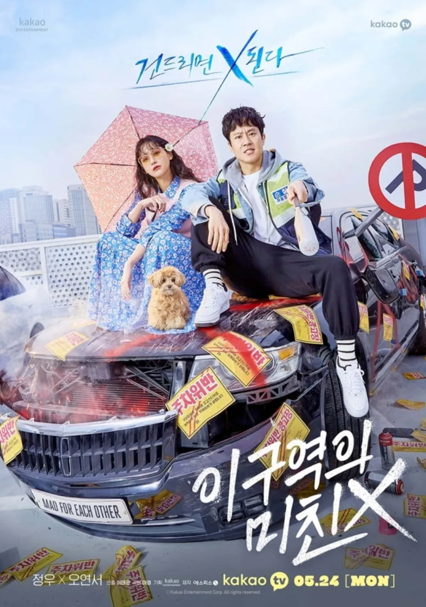

인생 드라마

「이 구역의 미친 X」 는 2021년에 방영된 드라마로, 분노 조절 장애가 있는 형사와 과거의 상처로 인해 세상과 단절된 여자가 서로에게 스며들며 변화하는 이야기다. 넷플릭스를 뒤지다가 발견해서 보게된 드라마이다. 처음엔 가볍게 보기 시작했는데, 예상보다 깊이 있는 감정선과 캐릭터들의 서사가 마음에 남았다. 단순한 로맨스가 아니라, 상처받은 사람들이 서로를 이해하고 치유해가는 과정이 현실적이면서도 따뜻하게 그려져서 인상적이었다. 부담 없이 볼 수 있으면서도, 보고 나면 여운이 남는 드라마다.